O novo GRILO no celular: menos casco, mais inglês.
Este é o redesenho de Aulas, Shadowing e Ditação, tela a tela, no tamanho real de um iPhone e com as cores e fontes do app. Em cada tela, toque em “ver como é hoje” para comparar com o print atual. A especificação completa, pronta para virar implementação, está no prompt.
As regras que guiam tudo
Sete princípios, todos nascidos dos problemas da auditoria. Quando houver dúvida na implementação, a resposta sai daqui.
O casco comum
As três práticas passam a usar as mesmas peças. É o primeiro passo da implementação e, sozinho, já resolve metade dos problemas da auditoria. Os componentes estão abaixo em tamanho real.
Topbar de sessão · 56 px
X de 44 px, barra de progresso e contador. Nas aulas, a barra se divide nas 5 fases. O título da aula sai daqui.
Dock de ação
Fixo no rodapé, com o primário ocupando o resto da largura. Fica desabilitado até haver resposta e sobe junto com o teclado (visualViewport).
Sheet de feedback · 3 tons
Sobe do dock e mostra a resposta certa. O botão vira Continuar no mesmo lugar, para o polegar não se mover.
Good morning = Bom dia
Uma letra fora do lugar — confira a grafia.
A certa era morning · manhã
Áudio herói
Círculo de 92 px nas etapas de ouvir e pílula de 56 px nas mistas. O 🐢 0,75× aparece ao lado quando a prática permite.
Linha de hub · 68 px
Estado à esquerda, título que nunca trunca a informação importante e meta curta. O item atual ganha um anel lima.
Resultado · 3 faixas
O anel fica verde, âmbar ou neutro, mas nunca vermelho. O XP aparece como “ganhou” e fica separado da meta.
Tokens (os que o app já tem)
Nenhuma cor nova. O lima passa a ter uma regra: ele significa “agora” (palavra tocando, item atual, combo) e só isso. Manrope fica com títulos e botões, Space Grotesk com o corpo. Botão em caixa alta e fonte pesada genérica saem.
Aulas — sistema das 4 pontas
O fluxo pedagógico continua o mesmo (teoria → checar → escrever → falar → fecho), assim como progresso e checkpoints. O que muda é o casco: hub que começa pela ação, topbar de uma linha, dock fixo, feedback em sheet e o fim das telas de ponte.
Suas aulas
Apresentações — quem é você em inglês
8 palavras · 5 frases · ~12 min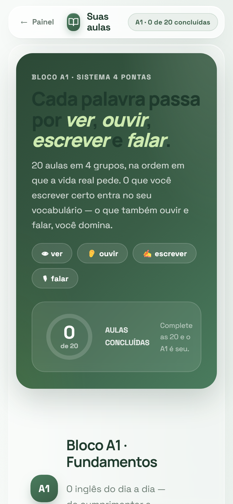
Hub
- A aula atual aparece sem scroll, em um cartão “Continuar” com CTA lima.
- O texto do hero vira o link “Como funcionam as 4 pontas”, que abre um sheet.
- Os grupos são seções recolhíveis; só o grupo atual vem aberto. A página cai de ~24 telas para ~3.
- Fim do título escuro sobre verde e dos textos truncados (“0 domi…”).
Cumprimentos — do bom dia ao boa noite
Sair cumprimentando qualquer pessoa, em qualquer hora do dia.
Escreveu certo → entra no vocabulário.
Ouviu e falou também → dominada.
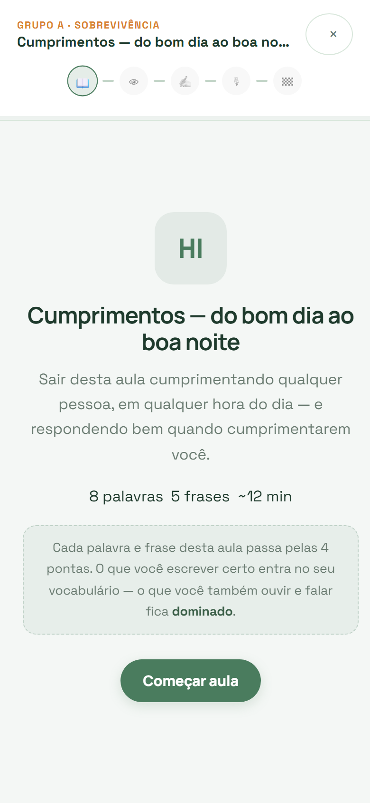
Capa
- A topbar mostra as 5 fases vazias: o aluno vê o tamanho do caminho antes de começar.
- A legenda das 4 pontas vira 4 ícones e a regra da escada cabe em 2 linhas.
- Conteúdo centralizado de verdade (hoje está ~20 px à direita) e CTA no dock.
As quatro saudações do dia
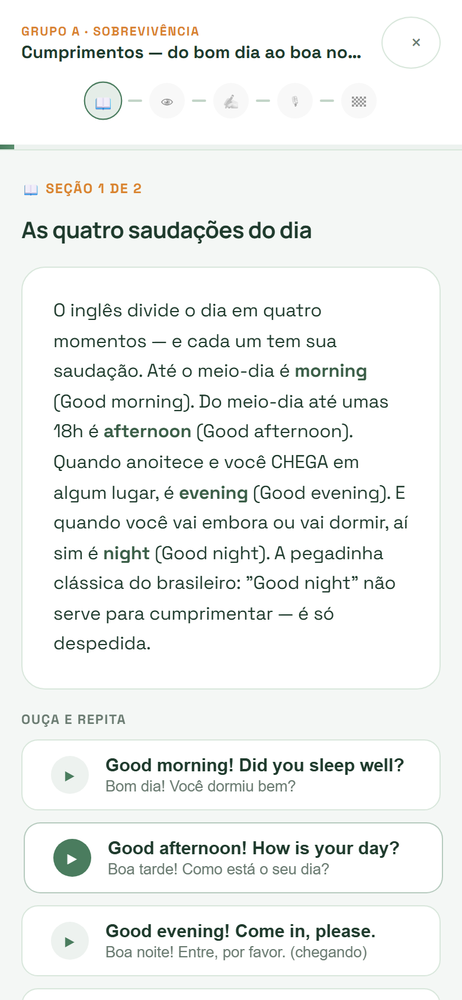
Teoria em cartões
- O parágrafo de ~10 linhas vira cartões de até 3 frases (os pontinhos mostram 1 de 3).
- A pegadinha vira um callout âmbar próprio, porque é o que o aluno mais precisa lembrar.
- Os exemplos com ▶ aparecem na primeira tela, não abaixo da dobra.
O que você ouviu?
Você ouviu “Good evening!” — boa noite, ao chegar.
ouvir de novo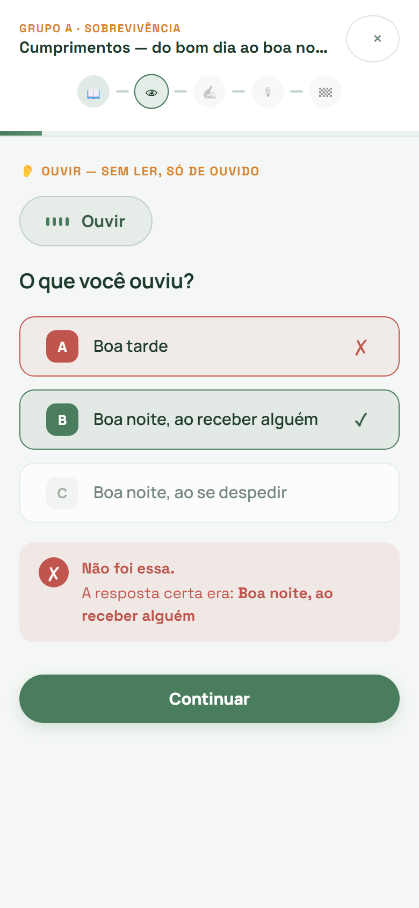
Checar · ouvir
- O áudio vira o herói centralizado (92 px) e toca sozinho ao entrar.
- O feedback sobe em um sheet que mostra o que foi dito em inglês, não só a tradução.
- “Continuar” fica sempre no mesmo lugar, e a metade de baixo deixa de ficar vazia.
“Estava chovendo na rua.”
Toque numa palavra montada para devolvê-la.
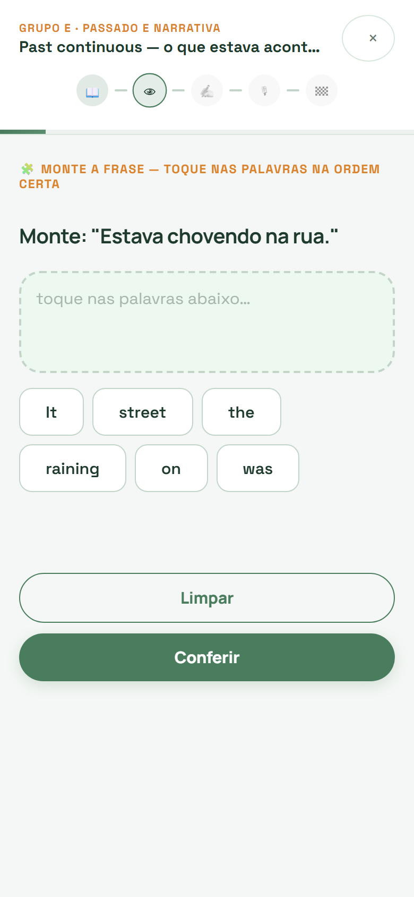
Checar · ordenar
- As palavras usadas ficam fantasma no banco, no lugar original. O aluno não perde a referência.
- “Limpar” vira um ícone ↺ dentro da área de montagem e deixa de competir com o Conferir.
- Conferir só acende quando todas as palavras estão na frase.
Significa: manhã
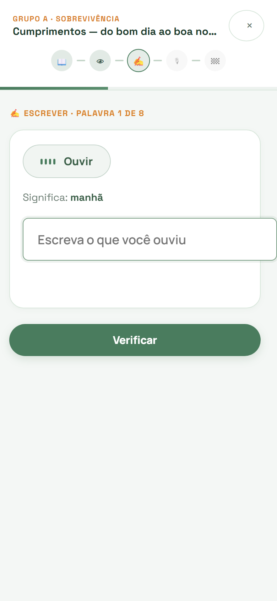
Escrever · teclado aberto
- A tela de ponte “Agora escreve.” deixa de existir e vira um selo (toast) de 1,6 s no topo.
- O dock gruda no teclado: Verificar fica sempre visível. “Não sei” encerra sem gastar as 3 tentativas.
- Os pontinhos de tentativa mostram quanto falta antes de revelar a resposta.
- O input fica dentro da coluna (hoje vaza do cartão pela direita).
Significa: manhã
manhã · MOR-ning. Ela volta numa próxima rodada — sem stress.
ouvir de novo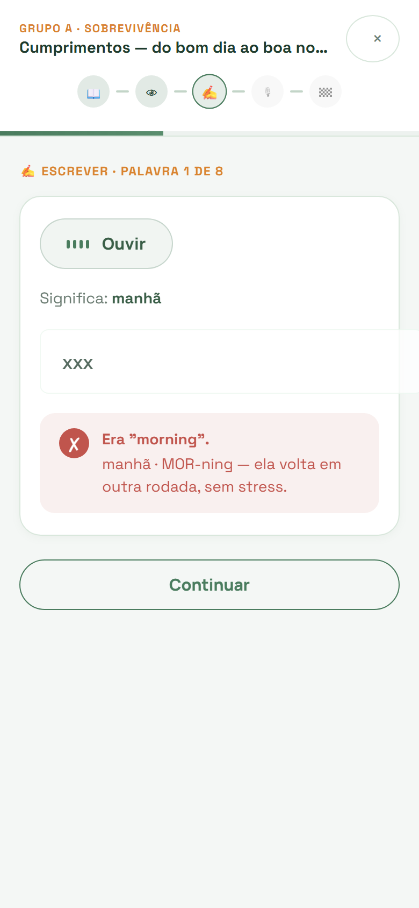
Escrever · errou as 3
- A microcopy atual (“sem stress”) é mantida, agora dentro do sheet.
- “Continuar” continua primário e cheio; hoje vira outline justamente quando é a única ação.
- Antes disso, os erros intermediários usam o sheet âmbar “Quase lá” com dica de fonética.
O que essa frase quer dizer?
Good morning! How are you?
Bom dia! Como você está?
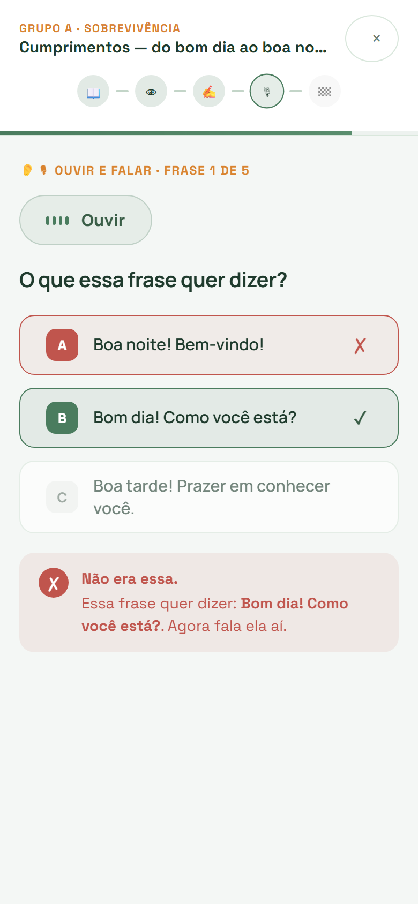
Ouvir e falar · tempo 1
- O sheet confirma o sentido e já mostra a frase em inglês que vai ser falada.
- O CTA “Ir para a fala” transforma a mesma tela no tempo 2, sem um Continuar no meio.
- Corrige o “Como você está?.” (ponto depois da interrogação).
As palavras acendem em verde conforme a gente reconhece.
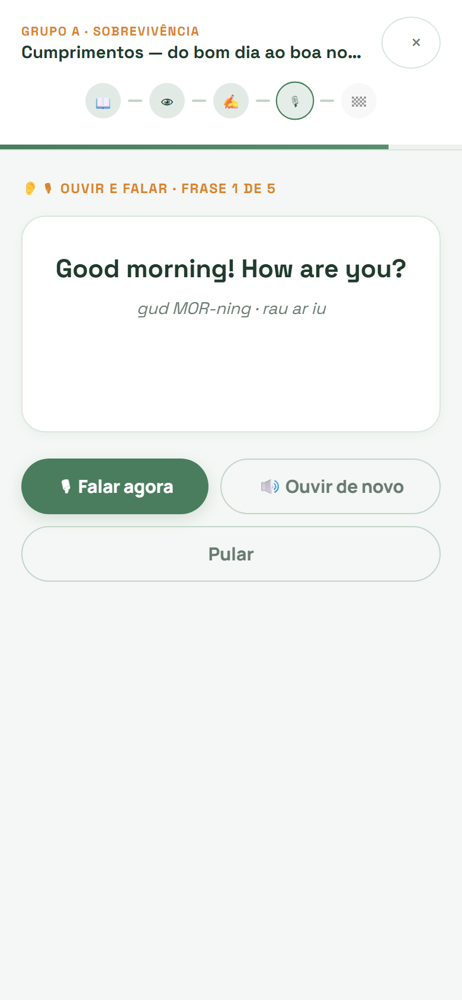
Ouvir e falar · tempo 2
- A frase vira o centro da tela (Manrope 30) e as palavras acendem conforme são reconhecidas.
- O microfone fica no dock, com 🔊 à esquerda e “Pular” como texto (hoje pesa igual aos outros botões).
- No fim, o diff por palavra aparece no sheet: verde, ou âmbar se faltou alguma.
Aula concluída!
Cumprimentos · conta para o bloco A1
+40 XP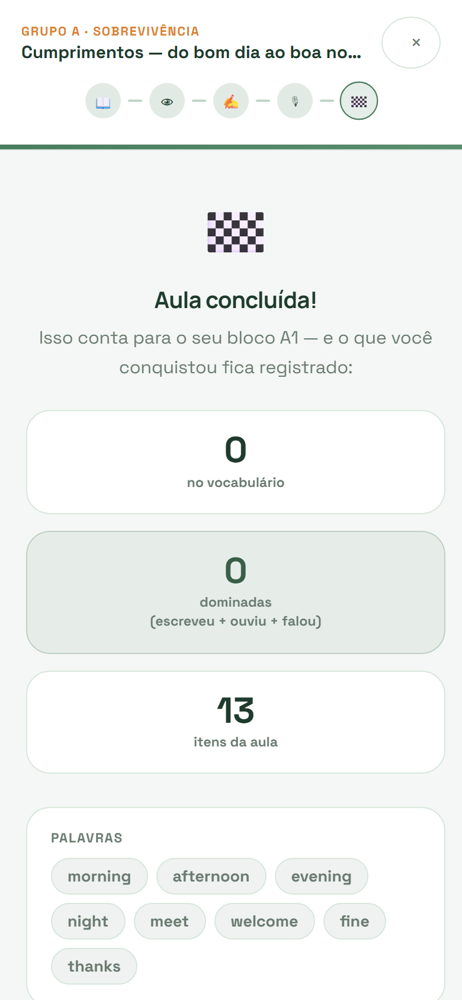
Fecho
- Os três contadores ficam em uma linha e sobra espaço para “O que levar”, as palavras que mais custaram, com ▶.
- Se nada entrou no vocabulário, o título vira “Primeira volta feita” e o texto diz que as 8 palavras voltam na próxima rodada.
- O 🏁 (que renderiza preto e branco) vira um ícone SVG da marca.
Shadowing
A grande mudança é a ordem: primeiro ouvir, depois decidir se vale nota. A escolha Casual × Ranqueada sai da porta de entrada e vira um interruptor. O “ao vivo” deixa de ser uma parede de texto cinza e vira um karaokê por frase, que dá para ver animado abaixo.
Shadowing
The Same Coffee
6 frases · Rotina · presente simples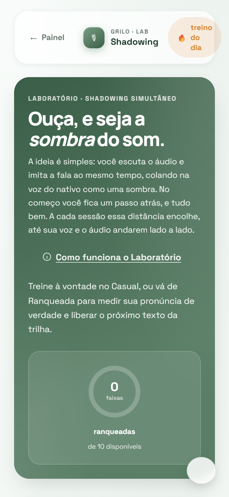
Hub
- A faixa da vez aparece sem scroll; os 3 blocos de texto do hero vão para “O que é shadowing?”.
- As faixas bloqueadas dizem o que fazer para liberar, e não só 🔒.
- “treino do dia” vira o chip “🔥 3 dias”, que não quebra linha. A bolha branca do tema sai.
The Same Coffee
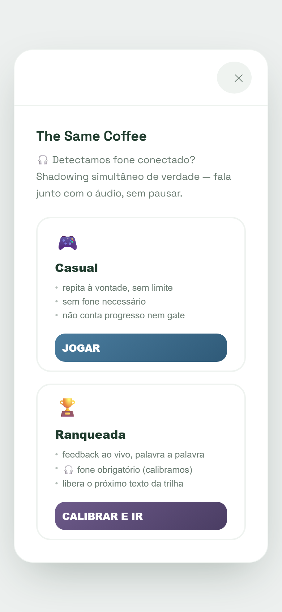
Primeiro, ouça (+ “Valer nota”)
- Substitui duas telas de hoje: a escolha Casual × Ranqueada e o preview.
- Frase a frase, com tradução e ▶ individual. A frase tocando ganha fundo lima (lima = agora).
- O interruptor “Valer nota” é a antiga Ranqueada: desligado é treino livre, ligado conta para a trilha.
- Sai a fonte pesada em caixa alta (“JOGAR”, “CALIBRAR E IR”) e a frase ambígua “Detectamos fone conectado?”.
The Same Coffee
Sem fone, sua voz se mistura ao áudio e a nota sai errada. Treine livre agora e ligue a nota quando estiver de fone.
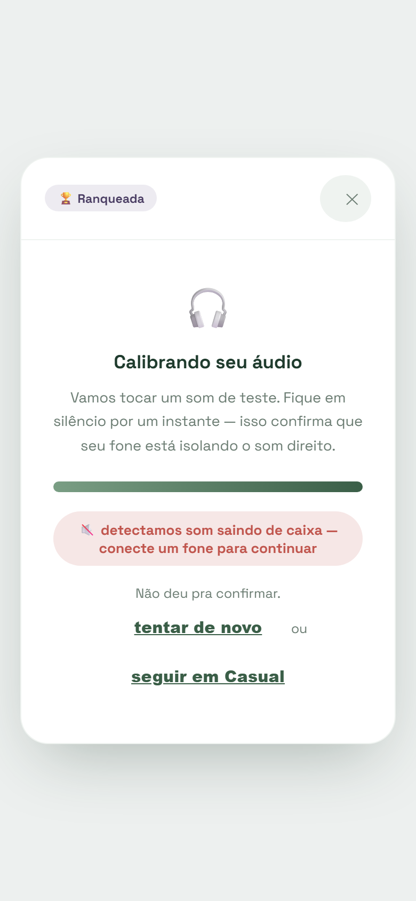
Calibração que falhou
- A calibração só roda se “Valer nota” for ligado, em um sheet sobre o preview, e não numa tela própria.
- Quando falha, o caminho principal é seguir treinando, não o erro vermelho.
- Se passar, o aparelho fica lembrado por 7 dias.
- Sai o “tentar de novo — ou — seguir em Casual”, que quebrava em 3 linhas.
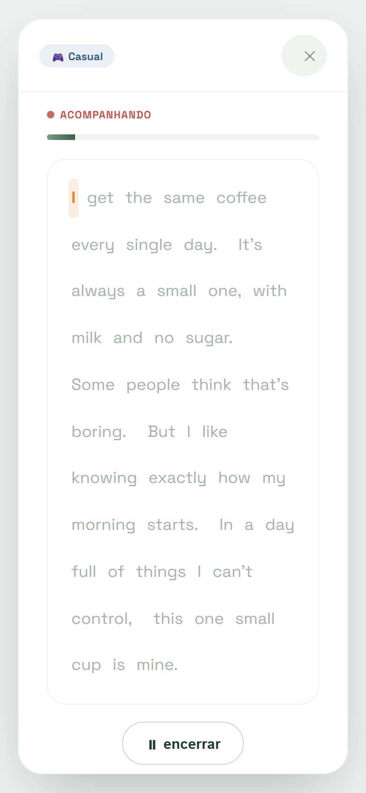
Ao vivo · karaokê por frase
- Uma frase por vez, grande. A palavra que o nativo diz acende em lima; as já ditas ficam em verde; as próximas ficam em cinza legível (contraste AA).
- A próxima frase aparece em prévia, e as ondas nativo × você são compactas.
- Controles reais: repetir frase, pausar, próxima. Hoje só existe “encerrar”.
- Usa o
onboundaryque já existe no código, com fallback de ritmo.
No caminho!
Faltam 8 pontos para liberar Ten Minutes Awake.
ganhou +15 XP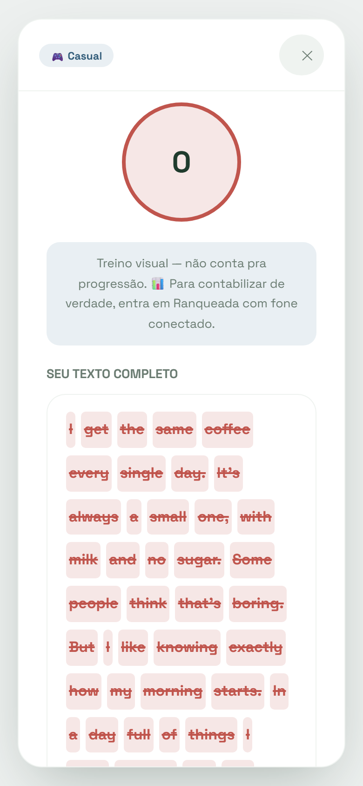
Resultado
- Anel âmbar (no caminho) com a meta escrita dentro, e o título diz quanto falta.
- A nota por frase mostra onde está o problema, com 🔊 para ouvir o nativo de novo.
- O XP aparece como “ganhou” e fica separado da meta.
Não ouvimos sua voz
Isso não é nota — é o microfone. Confira três coisas e tente de novo:
Treino livre — não conta para a trilha.
Resultado · sem fala detectada
- Hoje esse caso mostra nota 0 em vermelho e todas as palavras riscadas. Passa a ser uma tela de ajuda, sem nota.
- O checklist cobre as causas reais: permissão, navegador e distância.
- “Treino livre” vira uma nota de rodapé discreta, não uma caixa.
Ditação
Os blocos coloridos de estrutura, a melhor ideia de interface do GRILO hoje, viram protagonistas. A tela passa a ser desenhada com o teclado aberto, e todo o pós-resposta cabe em um sheet com o diff em uma linha.
Ditação
Nice to Meet You
8 frases · Apresentações · verbo to be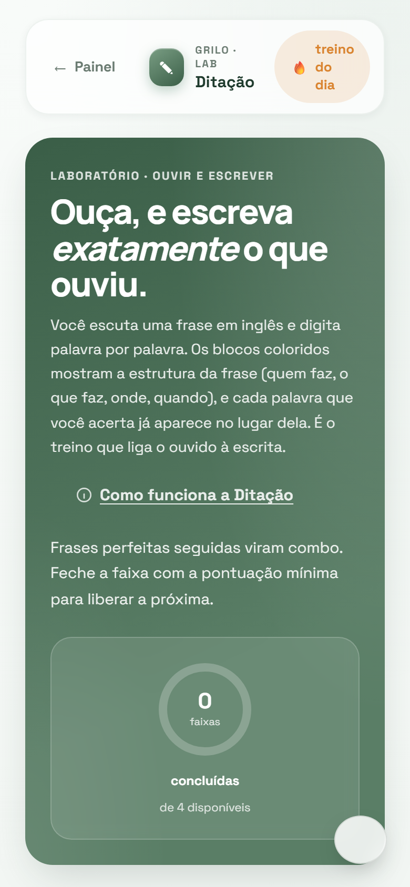
Hub
- Ganha identidade própria: os chips de estrutura no cartão adiantam o que torna a ditação diferente.
- Mesmo esqueleto de hub das outras práticas, mas sem copiar o hero do shadowing.
Nice to Meet You
Ouça cada frase e escreva exatamente o que ouviu. Faça 70 pontos para liberar a próxima.
Cada traço tem o tamanho da palavra. O que você acerta aparece no lugar certo.
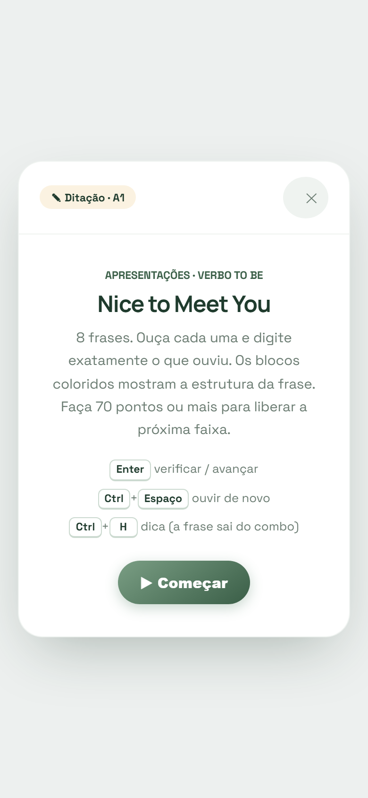
Intro da faixa
- Ensina a ler os blocos com um exemplo real antes da primeira frase.
- Os atalhos de teclado (Ctrl+Espaço, Ctrl+H) somem no celular e só aparecem com mouse e teclado físico.
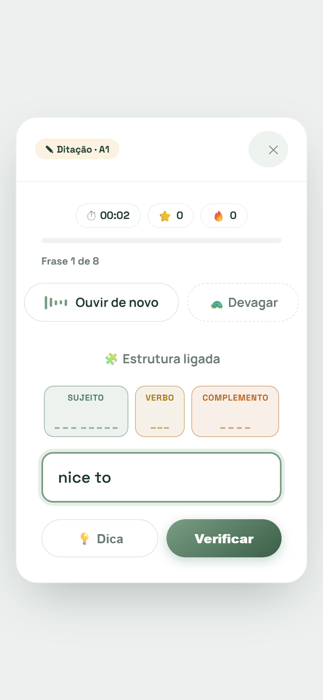
Frase · teclado aberto
- A tela inteira cabe acima do teclado: áudio, blocos, campo e o dock com Dica e Verificar.
- O HUD vira 2 chips na topbar. O tempo sai da sessão e vai para o resultado.
- Os blocos continuam preenchendo ao vivo enquanto o aluno digita.
- “Ouvir de novo” e “Devagar” cabem na coluna (hoje o Devagar vaza para a direita).
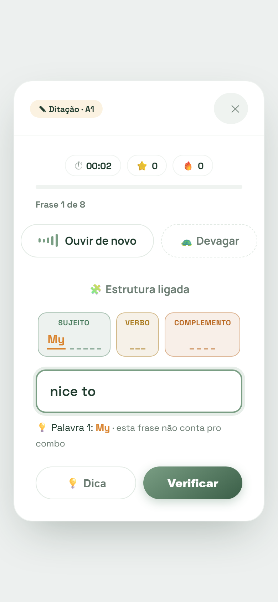
Dica usada
- A palavra revelada aparece dentro do bloco, em âmbar, no lugar exato dela.
- O aviso do custo (“sai do combo”) fica acima do dock, sempre visível com o teclado aberto.
- O combo na topbar zera na hora: a consequência fica clara.
Meu nome é Ana.
ouvir de novo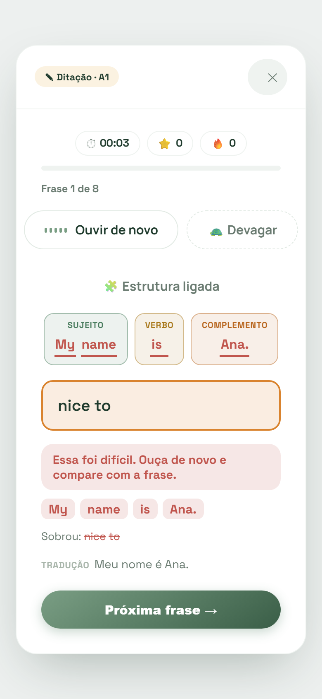
Feedback · quase
- O diagnóstico inteiro cabe em uma linha: certo em verde, o que foi digitado riscado e a correção sublinhada.
- Somem os chips repetidos e a caixa “Sobrou”: o que sobrou aparece riscado no próprio diff.
- Os pontos da frase aparecem no título do sheet (+75).
Eu sou do Brasil.
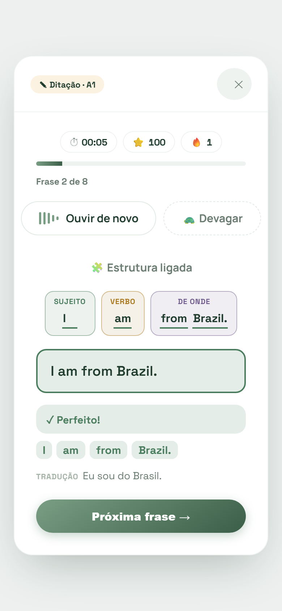
Feedback · perfeito
- O acerto ganha peso emocional: sheet verde, combo no título e o chip 🔥 em lima na topbar.
- Os blocos todos verdes fecham a frase visualmente, e a tradução fecha o sentido.
Primeira volta feita
Você ouviu as 8 frases. Na segunda volta o ouvido já conhece o ritmo.
ganhou +8 XP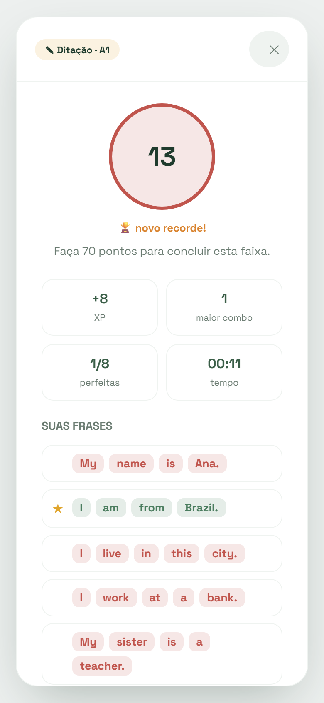
Resultado · primeira volta
- 13 pontos deixam de ser um círculo vermelho e viram um anel neutro com a meta escrita dentro.
- O título conta a história (“Primeira volta feita”) e diz por que vale repetir.
- “Para treinar” lista as frases que mais custaram, com ▶.
O que preciso de você
O desenho acima já assume uma resposta para cada ponto (marcada como “proposta”). Se concordar com tudo, dá para implementar direto; se discordar de algum, muda só aquela parte.
| # | Decisão | Proposta neste desenho | Alternativa |
|---|---|---|---|
| D1 | Nota no Shadowing exige fone? | Sim: “Valer nota” só com fone calibrado; sem fone é treino livre.proposta | Aceitar nota sem fone, com aviso de precisão menor (mais gente libera a trilha, nota menos confiável). |
| D2 | Teoria em cartões | Dividir automaticamente o texto atual por frase, em até ~280 caracteres por cartão.proposta | Reescrever a teoria das 20 aulas à mão em cartões (melhor resultado, bem mais trabalho de conteúdo). |
| D3 | Tempo na ditação | Sai da sessão e aparece só no resultado.proposta | Manter o cronômetro na topbar (mais pressão, mais “jogo”). |
| D4 | Formato do hub de aulas | Lista compacta com cartão “Continuar” e grupos recolhíveis.proposta | Trilha de nós estilo mapa (opção B da auditoria): mais personalidade, mais trabalho. |
| D5 | Telas de ponte nas aulas | Viram um toast de fase, sem toque extra.proposta | Manter como tela, mas com o conteúdo centralizado corrigido. |
Se decidir implementar: a ordem
- Casco comum + limpeza global. Topbar, dock (com teclado), sheet, hub compacto, resultado, fim da bolha de tema e dos overflows. Já melhora as três práticas.
- Ditação. Maior risco real no celular (teclado) e mudança mais contida.
- Aulas. Maior volume de uso, e o casco já faz metade do trabalho.
- Shadowing. Depende da D1, e o karaokê pede mais teste com voz real.
Cada etapa sai com prints antes/depois em 390 px e com o checklist de aceite do prompt (sem scroll horizontal, ação a no máximo 100 px do rodapé, contraste AA, temas claro e escuro, progresso intacto).